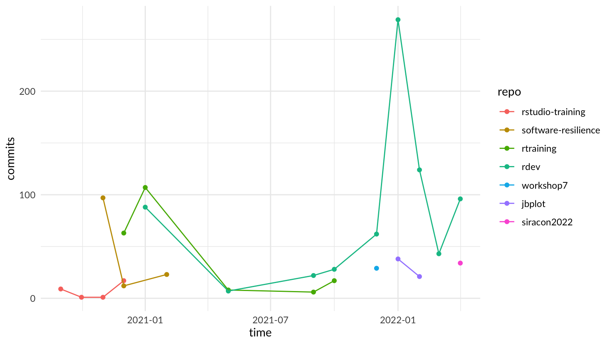
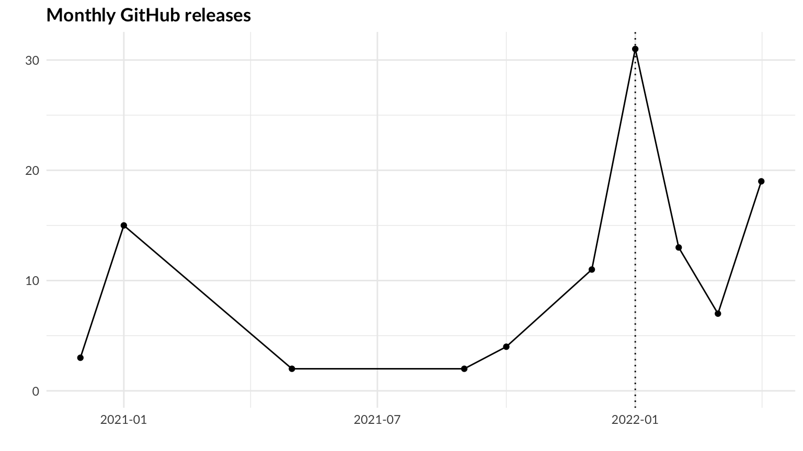
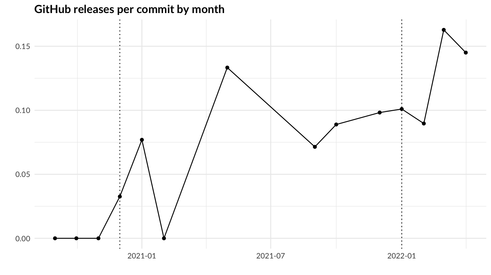

Outline of my 2022 SiRAcon 2022 presentation, “Making R work for you
(with automation!)”.
Outline
Use GitHub data to show how the DORA metrics changed over time as I
developed and used rdev.
git log
Idea: use gert::git_log() tables across all my public
and personal (private) R repositories over time to create an annotated
timeline and visualization of my work, and implementation of the DORA
technical practices.
Import git logs from my repositories:
# TODO: add data to package using methods from https://r-pkgs.org/data.html
# TODO: open issue on gert: git_log shows rebase & merge time, while "git log" shows original time
my_gitlogs <- map_dfr(
c(
"jbplot", "rdev", "rstudio-training", "rtraining", "siracon2022", "software-resilience",
"workshop7"
),
~ mutate(git_log(repo = paste0("~/GitHub/", .x), max = .Machine$integer.max),
repo = .x, .before = "commit"
)
) |>
arrange(time)
Filter logs by repository, adding cutoff dates when active
development ended for timeline visualization. Drop commits past April 30
to remove partial months.
filtered_gitlogs <- my_gitlogs |>
# set filter to midnight after last relevant commit, use local timezone like gert::git_log()
filter(!(repo == "rstudio-training" & time > ymd_h("2020-12-28 0", tz = Sys.timezone()))) |>
filter(!(repo == "software-resilience" & time > ymd_h("2021-02-22 0", tz = Sys.timezone()))) |>
filter(!(repo == "rtraining" & time > ymd_h("2021-10-08 0", tz = Sys.timezone()))) |>
filter(!(repo == "workshop7" & time > ymd_h("2021-12-07 0", tz = Sys.timezone()))) |>
filter(!(repo == "jbplot" & time > ymd_h("2022-02-07 0", tz = Sys.timezone()))) |>
filter(time < ymd_h("2022-05-01 0", tz = Sys.timezone())) |>
# oldest first
mutate(repo = factor(repo, levels = c(
"rstudio-training", "software-resilience", "rtraining", "rdev", "workshop7", "jbplot",
"siracon2022"
)))
Plot monthly commits by repository.
filtered_gitlogs |>
mutate(time = floor_date(time, unit = "month")) |>
group_by(time, repo) |>
summarize(commits = n(), .groups = "drop") |>
ggplot(aes(x = time, y = commits, color = repo)) +
geom_point() +
geom_line() +
labs(title = "Monthly commits by repository") +
labs(x = "", y = "", color = "repository") +
theme_quo()

Timeline
Create a timeline using groups showing the history of the
repositories:
- training: rstudio-training, rtraining
- development: rdev, jbplot
- notebooks: software-resilience, workshop7, siracon2022
repo_timeline <- filtered_gitlogs |>
select(repo, time) |>
mutate(time = floor_date(time, unit = "day")) |>
group_by(repo) |>
summarize(start = min(time), end = max(time)) |>
arrange(start) |>
mutate(group = case_when(
grepl("training", repo) ~ "training",
repo %in% c("rdev", "jbplot") ~ "development",
TRUE ~ "notebooks"
)) |>
mutate(color = hue_pal()(7)[row_number()])
repo_timeline
gg_vistime(repo_timeline, col.event = "repo", title = "R Development Timeline") +
theme_quo()

Key events
Plot key events on a timevis() timeline:
key_events <- read_csv("data/key-events.csv", col_types = cols(
id = col_integer(),
start = col_date(format = ""),
end = col_date(format = ""),
content = col_character(),
group = col_integer(),
group_content = col_character(),
intro = col_logical(),
milestone = col_logical()
))
dora_groups <- key_events |>
select(id = group, content = group_content) |>
unique() |>
arrange(id)
key_events |>
timevis(groups = dora_groups)
2020-09-08: Starting out, rstudio-training, renv
- Version Control
- Stored project files, notebook (Rmd and html) in private git
repository
- Use renv to store package dependencies in source control
- Trunk-based Development
- Direct commits to master (not recommended)
- Shifting Left on Security
- Start development with
renv::update()
2020-09-11: Published “Working
with R”
2020-09-30: (Aside) First bug discovered, https://github.com/rstudio/renv/issues/547 !
2020-10-06: setup-r script
- Version Control
- Automate setup of local R development environment
2020-12-02: Adoption of styler and lintr
- Code Maintainability
- Consistent formatting (styler)
- Consistent code (lintr)
- Continuous Testing
- Static code analysis (lintr)
2020-12-27: Migration to rtraining package
- Continuous Integration
- Continuous Testing
- Version Control
2020-12-29: build-site script
- Deployment Automation
- build-site: shell script to publish notebooks using
rmarkdown::render_site()
- MVP for publishing notebooks using GitHub Pages
2020-12-30: First release: rtraining 0.0.1
2020-12-30: GitHub Actions
- Continuous Integration, Continuous Testing
2020-12-30: lint_all()
- Continuous Integration, Continuous Testing
- lint all files locally
- first testthat tests
- roxygen2 documentation
2020-12-30: style_all()
- Continuous Integration, Code Maintainability
- run styler on all files locally
2020-12-31: Switch GitHub Actions to lint_all()
- Continuous Integration, Continuous Testing
- match GitHub and local CI checks
2021-01-01: ci(), check_renv()
- Continuous Integration, Continuous Testing
- run all CI checks locally
- eliminate toil
- match GitHub and local CI checks
2021-01-01: Migration to rdev package
- Code Maintainability
- Moved most functions to new rdev package
- Consistent tools across projects
2021-01-02: Multi-platform R CMD check
- Continuous Integration, Continuous Testing
- ensure package works on Windows and macOS
2021-01-03: First version of build_analysis_site()
- Deployment Automation
- Automatically build GitHub Pages site with functions, notebooks
- Still a shell script
- Beginning of standard deployment and release pattern:
- bump version
- write code
- update NEWS.md
- “GitHub Release”
- build_site
2021-01-09: Analysis Package Layout
- Code Maintainability
- Consistent package layout across projects
- Supported future automation for creating packages
2021-01-12: Native R version of
build_analysis_site()
2021-01-16: Migrated build_analysis_site() from
rtraining to rdev
- Code Maintainability
- Cross-platform support
- Moves all automation to R Console
- Deployment Automation
- Automated builds across all projects
2021-09-29: Formal R Analysis Package Layout, Documented release
process
- Code Maintainability
- Consistent package layout across projects
- Supported future automation for creating packages
- Deployment Automation
- Supported future automation for creating releases
2021-12-04: Documented package creation process
- Code Maintainability
- Consistent package layout across projects
- Supported future automation for creating packages
2021-12-23: theme_quo(): a personalized theme to
visually identify my ggplots.
2022-01-01: Automate package configuration with
use_analysis_package()
- Code Maintainability
- Consistent package layout across projects
2022-01-10: Create package automation (rdev 0.7.0)
create_github_repo(): Create new GitHub repository
following rdev conventions in the active user’s account and create a
basic package
use_rdev_package(): Add rdev templates and settings
within the active package. Normally invoked when first setting up a
package.
Added build_rdev_site(), a wrapper for
pkgdown::build_site() optimized for rdev workflow that
updates README.md and performs a clean build using
pkgdown
Added ‘Analysis Notebook’ R markdown template for RStudio (File
> New File > Rmarkdown > From Template)
Migrated ggplot2 themes/styles (theme_quo(),
viridis_quo()) to new package,
jabenninghoff/jbplot
Code Maintainability
- Cross-platform support
- Moves all automation to R Console
Deployment Automation
- Automated builds across all projects
2022-01-10: Automate notebook listings in README
2022-01-17: Release automation (rdev 0.8.0)
2022-01-19: More workflow automation
- Added
new_branch(): Create a new feature branch, and
(optionally) bump the version in DESCRIPTION
2022-01-21 - 2022-02-06: adding test coverage
- Continuous Testing
- Biggest challenge yet
- Significantly improved code quality
- “Unit” testing
- Just test
- Test program flow
- Don’t test other people’s code
- Mock external functions
- Fix bugs by writing a test
- Code coverage, and code coverage metrics
- Test Driven Development
- Tests Give You Confidence (to Refactor)
(Show plot of increasing code coverage from codecov.io)
2022-01-24: write_eval() is a really bad idea:
#' Write and evaluate an expression
#'
#' `write_eval(string)` is a simple wrapper that prints `string` to the console using
#' [`writeLines()`][base::writeLines], then executes the expression using [`parse()`][base::parse]
#' and [`eval()`][base::eval].
#'
#' @param string An expression to be printed to the console and evaluated
#'
#' @return The return value from the evaluated expression
#'
#' @examples
#' write_eval("pi")
#'
#' write_eval("exp(1)")
#' @export
write_eval <- function(string) {
if (!is.character(string)) stop("not a character vector")
if (string == "") stop("nothing to evaluate")
writeLines(string)
eval(parse(text = string))
}
2022-01-30: Manual test script for new package setup
- Continuous Testing
- Manual tests evolve into partially or fully automated tests
2022-02-02: Added local_temppkg() test helper
function
- Continuous Testing
- Test helpers - testing test helpers helps!
2022-02-06: rdev 1.0.0 !
- Release automation: Stage and create GitHub releases, including
GitHub pages
- Continuous Integration: Local continuous integration checks and
dependency management
- Package Setup: Package setup tasks, typically performed once
2022-02-06 - Today: Continuous Improvement
- Improve CI workflow to catch mistakes
- Spell checks
- Branch protection automation
- Options
- Dependency management
- Product health
Releases
Get releases from GitHub using
siracon2022::gh_releases():
# cache results
if (!exists("my_releases")) {
my_releases <- map_dfr(
c("rtraining", "rdev", "workshop7", "jbplot", "siracon2022") %>% setNames(., .),
gh_releases, "jabenninghoff",
.id = "repo"
) |>
arrange(time)
}
Filter releases past April 30 to remove partial months.
filtered_releases <- my_releases |>
mutate(time = with_tz(time, tzone = Sys.timezone())) |>
filter(time < ymd_h("2022-05-01 0", tz = Sys.timezone()))
Plot releases over time: total GitHub releases per period (for all
repositories) to show changes in release frequency. The dotted line
marks the implementation of release automation.
monthly_releases <- filtered_releases |>
mutate(time = floor_date(time, unit = "month")) |>
group_by(time) |>
summarize(releases = n(), .groups = "drop")
monthly_releases |>
ggplot(aes(x = time, y = releases)) +
geom_point() +
geom_line() +
geom_vline(xintercept = ymd_h("2022-01-01 0", tz = Sys.timezone()), linetype = "dotted") +
coord_cartesian(ylim = c(0, NA)) +
labs(title = "Monthly GitHub releases") +
labs(x = "", y = "") +
theme_quo()

Also plot releases per commit, which will fall between 0 and 1. The
dotted lines mark adoption of GitHub and implementation of release
automation.
filtered_gitlogs |>
mutate(time = floor_date(time, unit = "month")) |>
group_by(time) |>
summarize(commits = n()) |>
full_join(monthly_releases, by = "time") |>
replace_na(list(commits = 0, releases = 0)) |>
mutate(rpc = releases / commits) |>
ggplot(aes(x = time, y = rpc)) +
geom_point() +
geom_line() +
geom_vline(xintercept = ymd_h("2020-12-01 0", tz = Sys.timezone()), linetype = "dotted") +
geom_vline(xintercept = ymd_h("2022-01-01 0", tz = Sys.timezone()), linetype = "dotted") +
labs(title = "GitHub releases per commit by month") +
labs(x = "", y = "") +
theme_quo()

Themes
Reducing toil. Forming habits, which become repeated tasks, which
become automation. If it’s automated, it gets done.
Functional programming (purrr) vs procedural programming. Functional
programming is harder to learn, but safer.
R dialects: base R is for functions, tidyverse R is for
notebooks.
“Clean” code: code should be written for future humans, including
you!
The Future
Mutation Testing: Wikipedia
R packages:
Papers:
Formal Methods:
Story
Use the timeline and plots to tell the story of continuous
improvement. Each section filters on group 1 and the other focus area.
Integrate themes into story.
- Introduction: background and motivation, use Event group as the talk
overview. Exclude SiRAcon 2020 from future timelines. “R Development
Timeline”.
- Version Control: put everything (except artifacts) into version
control for reproducibility and history.
- Trunk-based Development: linear development avoids code
conflicts.
- Shift Left on Security: maintenance first ensures you get it
done.
- Continuous Integration: build and test on each commit to catch
mistakes early.
- Deployment Automation: automate your development workflow to spend
more time writing.
- Code Maintainability: consistent and clean code is easier to
understand.
- Continuous Testing: (the biggest challenge) formally specifying what
you are building and how it is supposed to work defends against
the dangers of hidden assumptions.
- Results: “Monthly commits by repository”, “Monthly GitHub releases”,
“GitHub releases per commit”. Improvement on technical practices also
means less rework, less deployment pain, less burnout, and greater job
satisfaction.
- Closing: complete key events timeline.
Introduction
Background and motivation.
key_events |>
filter(group == 1) |>
timevis(groups = filter(dora_groups, id == 1), showZoom = FALSE)
Version Control
Put everything (except artifacts) into version control for
reproducibility and history.
key_events |>
filter(!intro) |>
filter(milestone | group == 2) |>
timevis(groups = filter(dora_groups, id %in% c(1, 2)), showZoom = FALSE)
Trunk-based Development
Linear development avoids code conflicts.
key_events |>
filter(!intro) |>
filter(milestone | group == 3 | id == 44) |>
timevis(groups = filter(dora_groups, id %in% c(1, 3)), showZoom = FALSE)
Shift Left on Security
Maintenance first ensures you get it done.
key_events |>
filter(!intro) |>
filter(milestone | group == 4) |>
timevis(groups = filter(dora_groups, id %in% c(1, 4)), showZoom = FALSE)
Continuous Integration
Build and test on each commit to catch mistakes early.
key_events |>
filter(!intro) |>
filter(milestone | group == 5) |>
timevis(groups = filter(dora_groups, id %in% c(1, 5)), showZoom = FALSE)
Deployment Automation
Automate your development workflow to spend more time writing.
key_events |>
filter(!intro) |>
filter(milestone | group == 6 | id == 32) |>
timevis(groups = filter(dora_groups, id %in% c(1, 6)), showZoom = FALSE)
Code Maintainability
Consistent and clean code is easier to understand.
key_events |>
filter(!intro) |>
filter(milestone | group == 7 | id == 32) |>
timevis(groups = filter(dora_groups, id %in% c(1, 7)), showZoom = FALSE)
Continuous Testing
The biggest challenge: formally specifying what you are building and
how it is supposed to work defends against the dangers of
hidden assumptions.
key_events |>
filter(!intro) |>
filter(milestone | group == 8 | id == 32) |>
timevis(groups = filter(dora_groups, id %in% c(1, 8)), showZoom = FALSE)
End of (out)line.
